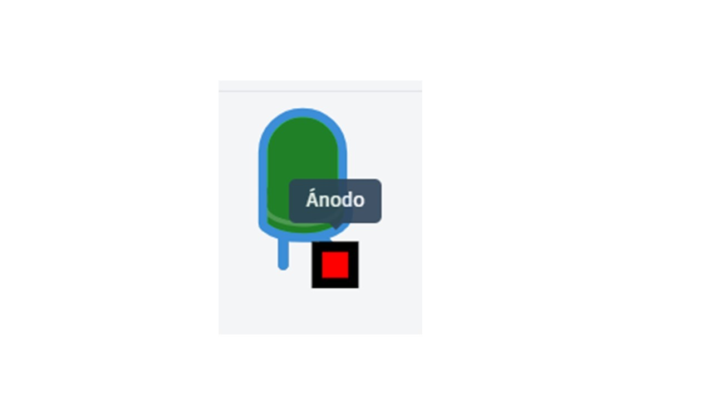
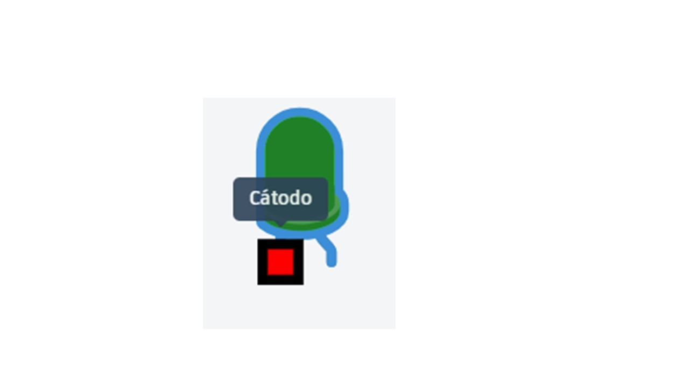
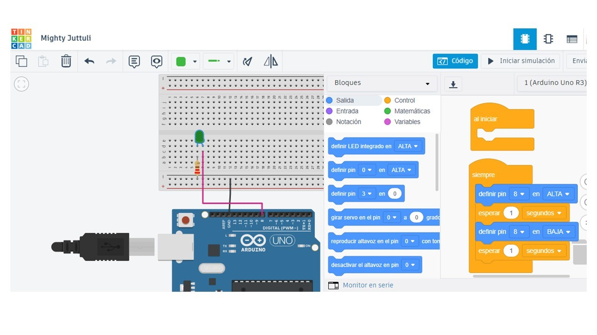
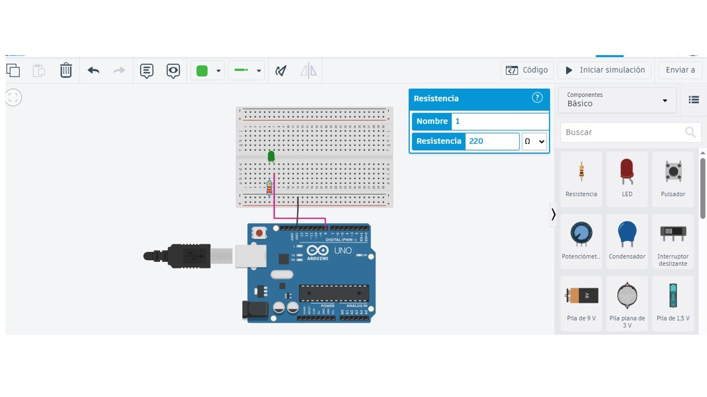
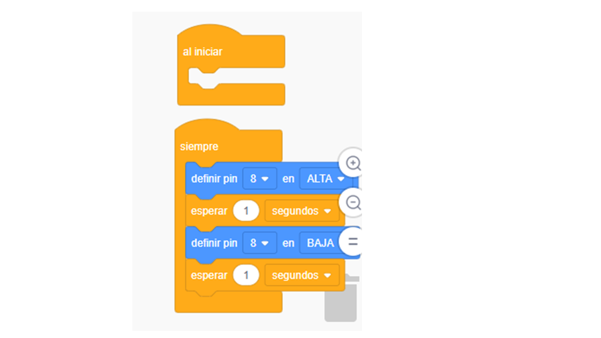
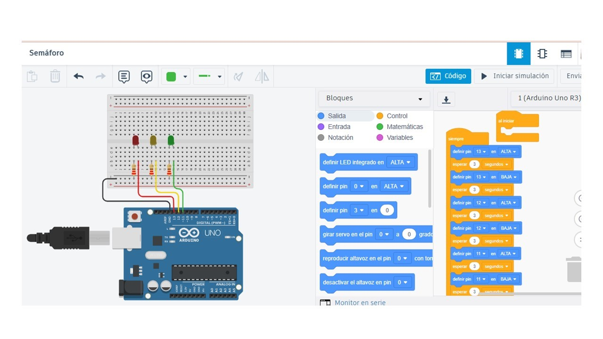

Componentes básicos
El cerebro del circuito. Ejecuta el programa.
Placa de pruebas para conectar sin soldar.
Emite luz y tiene polaridad.
Limita la corriente para proteger el LED.
Conectan los componentes.
Conociendo el LED
Pata larga. Se conecta al lado positivo o al pin digital.

Pata corta. Se conecta a GND.

Tu primer circuito Arduino programado con bloques
Materiales necesarios en Tinkercad
Buscá Arduino Uno R3 y arrastralo al lienzo.
Colocá el LED respetando la polaridad.
Configurala en 220 Ω para proteger el LED.
Usá el pin 8 para controlar el LED y GND para cerrar el circuito.
En el bloque “siempre”: pin 8 en ALTA, esperar 1 segundo, pin 8 en BAJA, esperar 1 segundo.
El LED debe prenderse y apagarse cada 1 segundo.
📸 Así se ve el circuito terminado
Vista del circuito con bloques

Vista ampliada de la resistencia

🧱 Los bloques de programación

- ✓El Arduino está en el lienzo de trabajo.
- ✓El LED está correctamente orientado.
- ✓La resistencia está configurada en 220 Ω.
- ✓El cátodo está conectado a GND.
- ✓El programa usa pin 8 en ALTA y BAJA con esperas de 1 segundo.
Errores frecuentes
El LED no enciende.
Puede aparecer una advertencia.
El cable y el bloque no coinciden.
El circuito no se cierra.
Desafío extra: Semáforo
Crear una secuencia de luces rojo, amarillo y verde usando bloques.
Tres LED, tres resistencias de 220 Ω, Arduino Uno R3, protoboard y cables.
📸 Así se ve el semáforo terminado
Circuito del semáforo

Código del semáforo

Acceso rápido a la guía
¿Qué aprendimos?
Reconocimos Arduino, protoboard, LED, resistencia, cables y GND.
Programamos una secuencia simple de encendido y apagado.
Probamos el funcionamiento antes de construirlo físicamente.
Aplicamos la misma lógica para diseñar un semáforo.